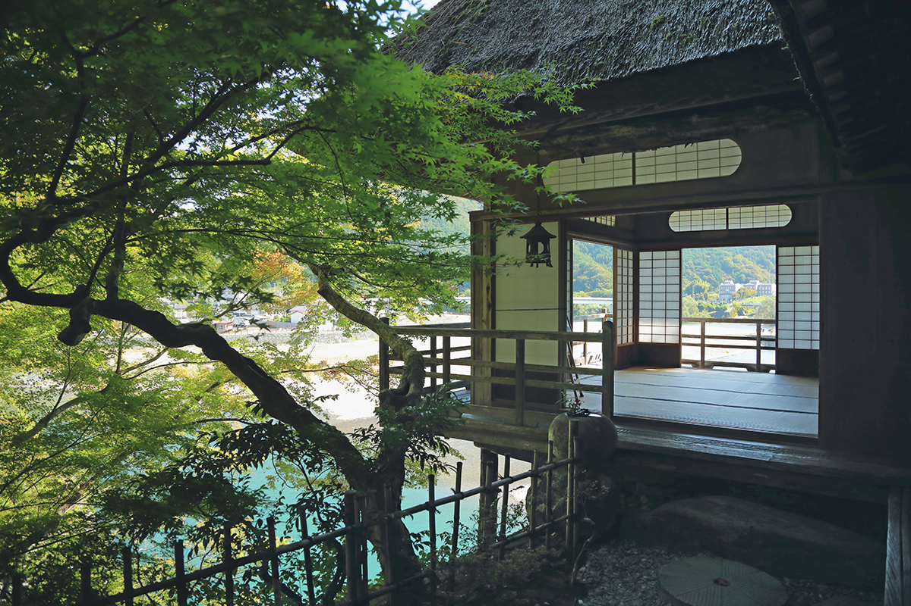
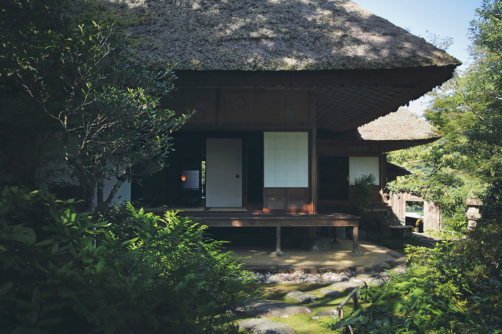
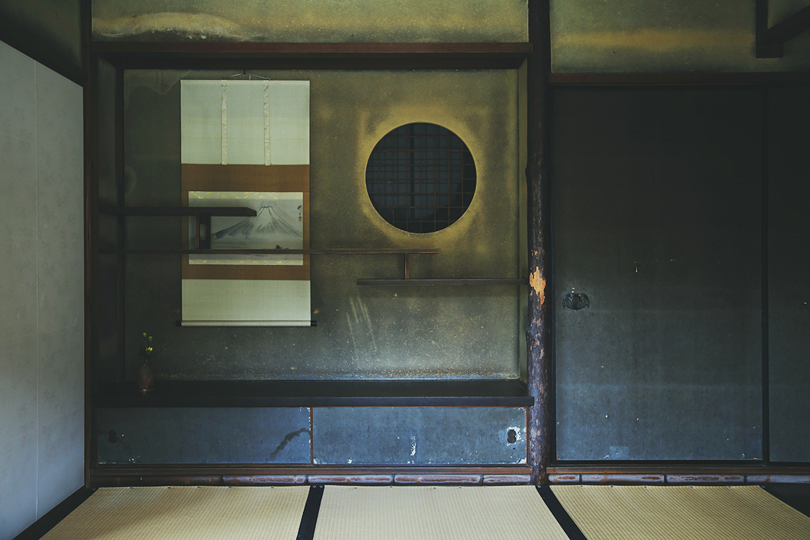
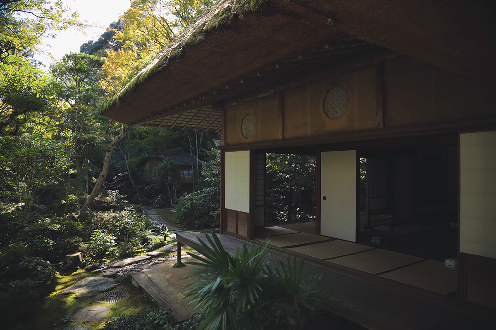

Префектура Эхимэ · Одзу · архитектура
Вилла Гарю-сансо в Одзу: комнаты, в которых живут времена года

Над рекой Хидзи в городе Одзу стоит деревянный дом, который строили больше десяти лет. У каждой комнаты здесь своё время года, а беседка над обрывом похожа на лодку, готовую отплыть.
Место
Скала, река и «лежащий дракон»
Берег реки Хидзи в Одзу с эпохи Эдо считался одним из лучших видовых мест. Гора Хорай, поднимающаяся из воды, была похожа на лежащего дракона, и Ясуцунэ Като (1657–1715), третий владетель княжества Одзу, дал этому месту имя «Гарю», то есть «лежащий дракон».
Через двести с лишним лет это имя и это место унаследовал Торадзиро Кавати (1853–1909). Торговец из здешних мест, он разбогател в Кобе на экспорте растительного воска, а на склоне лет вернулся на родину и построил виллу на скале над рекой. Учился он у императорских вилл Кацура и Сюгакуин, отбирал материалы сам и собрал дом из них руками приглашённых мастеров. Работа заняла больше десяти лет и завершилась в 1907 году, а вскоре после этого заказчик умер.
Архитектура
Комнаты как времена года
Главный дом виллы называется «Гарю-ин».

Здесь у каждой комнаты свой сезон. В комнате тумана и луны трёхъярусные полки изображают туман, а свет, падающий в круглое окно ниши, читается как луна.

В комнате свежего ветра резьба на фризе-ранма с цветочным плотом означает весну, капли воды справа лето, узор из хризантем и воды слева осень, а окно в форме снежного кольца за спиной зиму.
В третьей комнате под самым потолком вырезан феникс, а раздвижные двери открываются так, что дом сливается с садом.

Беседка
Дом-лодка над обрывом
Отдельная беседка «Фуроан» стоит на самом краю скалы. Всё здание задумано как лодка: его смело вынесли из каменной стены на подпорках, потолок плавно изгибается, чтобы ловить отражение лунного света на воде. Столбы сделаны из неошкуренных кедровых брёвен, а с западной стороны сень поддерживает живое дерево маки, у которого сохранились листья.
Сегодня
Что сохранилось
Помимо главного дома и беседки на участке есть чайная «Тисиан», а сад устроен с расчётом на излучину реки под названием Гарюбути. Участок занимает около 6700 м².
В 1978 году виллу выкупил город, с 1980 года она открыта для посетителей. В 1982 году её признали памятником культуры города Одзу, в 1985 году памятником культуры префектуры, а в 2016 году вилла вошла в список важных памятников культуры страны.
Вилла Гарю-сансо
- Адрес
- префектура Эхимэ, Одзу, Одзу, 411-2
- Телефон
- +81 893-24-3759
- Часы работы
- 9:00–17:00 (вход до 16:30)
- Выходные
- нет
- Цены
- взрослый 550 иен, школьники до средней школы 220 иен; единый билет с замком Одзу 880 иен для взрослых и 330 иен для детей
- Сайт
- garyusanso.jp
Фото: Кита-Менеджмент.